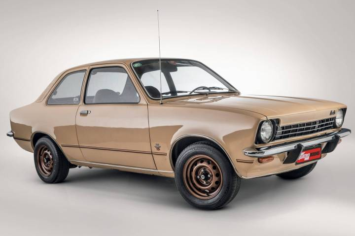

O Chevrolet Chevette é um sedã compacto clássico brasileiro, conhecido pela tração traseira e robustez. Produzido entre 1973 e 1993, destacou-se com motores 1.4, 1.6 e 1.6/S (até 81 cv), câmbio
de 4 ou 5 marchas, freios a disco na dianteira e suspensão equilibrada, pesando cerca de 800-900 kg.
Fonte:Wikipedia
Voltar ao Inicio>>